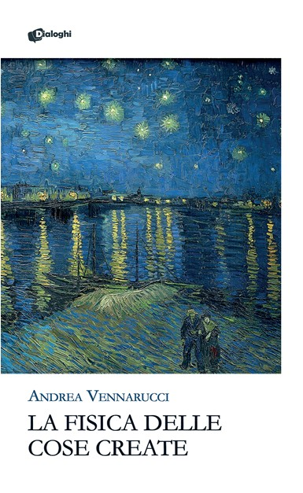

Poetry and reflections
La fisica delle cose create
La fisica delle cose create is a collection of poems and reflections exploring the relationship between scientific knowledge, existence, uncertainty and the human need to give meaning to reality.
The work brings together the perspective of an engineer and researcher with a more intimate and literary form of observation. Physics becomes not only a discipline, but also a language through which memory, identity, time and creation can be examined.